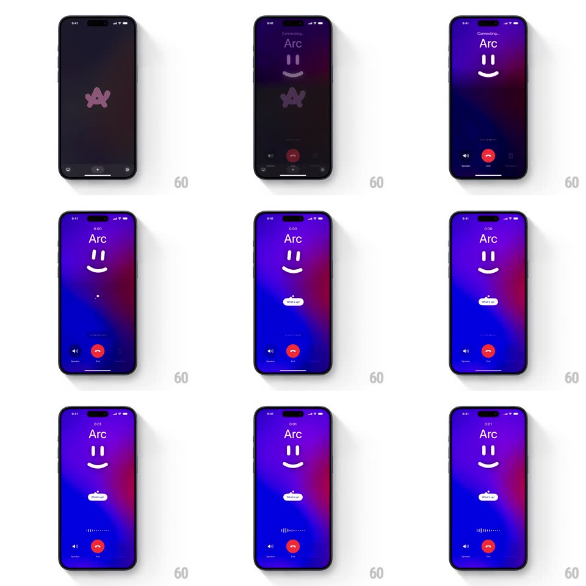

Media
Frame-by-frame

Rebuild this interaction 1:1: Arc's raise-to-call - raising the phone opens a voice-call screen for "Arc" over a flowing purple-blue aurora: a minimalist smiley face, a springy "What's up?" tooltip, and a pulsing dotted audio visualizer between Speaker and End buttons.

Rebuild this interaction 1:1: Arc's raise-to-call - raising the phone opens a voice-call screen for "Arc" over a flowing purple-blue aurora: a minimalist smiley face, a springy "What's up?" tooltip, and a pulsing dotted audio visualizer between Speaker and End buttons. ## Integration Integration: stack-agnostic spec - springs given as stiffness/damping, timed motions as duration + curve; map every value to your framework and animation library of choice. ## Scene Dark browser-ish screen with the Arc logo, then the call UI: "Connecting..." then "Arc" with a timer, a huge smiley (two pill eyes, arc smile) center, a small white "What's up?" bubble below it, a row of dotted bars, and Speaker / red End / keypad controls at bottom. The background is a slowly flowing purple-to-blue gradient. ## Motion spec Pattern: assistant call screen with a living face. - Raise gesture: the screen crossfades to the aurora (300ms), "Connecting..." fading to the contact name as the timer starts with a digit roll. - The smiley blinks on arrival (eyes squash to lines, 120ms, spring back ~460/16), then idles: blink every 3-5s, a subtle sway (+-4px, 2.6s sine). - "What's up?" tooltip pops from below the face (scale 0.6 -> 1 with spring ~420/15 - a bubbly overshoot) with a small tail wiggle; it fades when audio starts. - The visualizer: a row of dots/bars whose heights follow voice energy (spring ~260/14 per bar), resting as a flat dotted line; it mirrors both sides symmetrically. - The aurora drifts continuously (hue shift +-10deg over 12s, slow radial pan) - the whole screen breathes. - End: the face's smile flattens, the screen dims and slides down (300ms). ## Calibration - The face is two shapes - expressiveness comes from timing, not detail. - Visualizer latency under 50ms - it must feel caused by the voice. ## Reduced motion Static face, no aurora drift; visualizer becomes a simple level bar. ## Don't miss - The tooltip is the assistant's opening line delivered as motion - pop, wag, disappear. - Symmetry in the visualizer reads as "listening"; a one-sided one reads as playback.